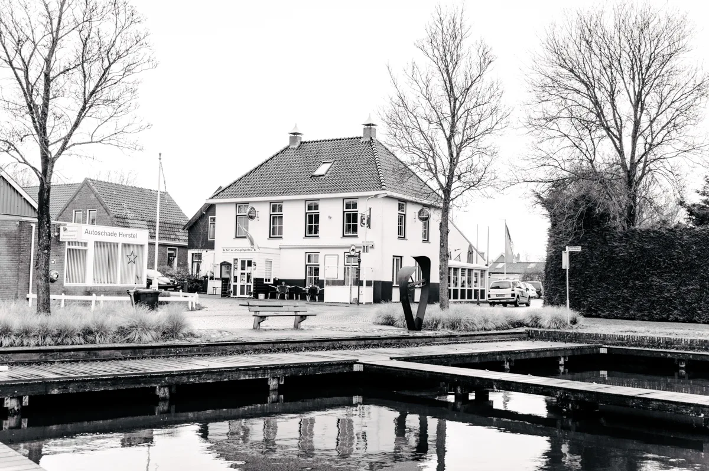

Waarom het Spoorzicht heet
Al meer dan 150 jaar is Spoorzicht een plek voor gezelligheid. De eerste honderd jaar vooral als drinkgelegenheid, tot er in de jaren 70 ook een eetgelegenheid bij kwam. Vroeger kwamen hier vertegenwoordigers, reizigers en natuurlijk de echte stamgasten. Nu komen oud en nieuw hier samen.
Kastelein Jelle, of wellicht zijn opvolger, gaf het de naam ‘Spoorzicht’. Het spoor van Sneek naar Stavoren werd in 1885 aangelegd. Het was eerst gepland via Workum en Koudum, maar ging uiteindelijk langs Hindeloopen. In Koudum moest je dus niet al te bijziend zijn om vanaf de herberg het spoor te zien: het ligt wel drie kilometer verderop.
‘Treinzicht’ was een betere naam geweest, want de zwarte pluim van de locomotief was van ver te zien.
De 13de kasteleins
Sinds 2020 zijn Geert en Hilde de dertiende eigenaren van Spoorzicht.
Geert
Vaak in de keuken te vinden, maar tapt ook graag een biertje. Gastvrijheid met humor, en een goede samenwerking met de leveranciers uit de buurt.
Hilde
Altijd achter de bar met een lach. Zij maakt ook de taartjes.
Jenny
Een vast gezicht in Spoorzicht en een echte duizendpoot.